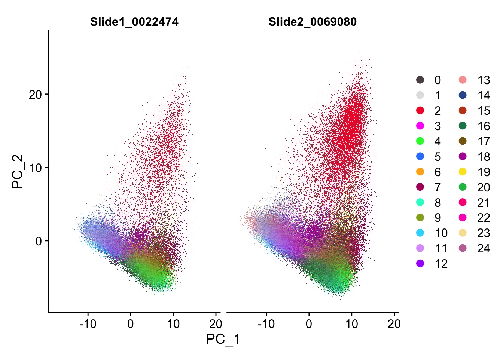
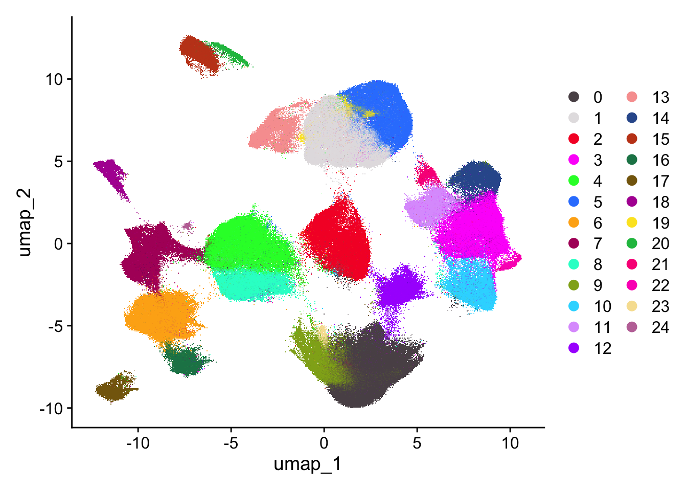
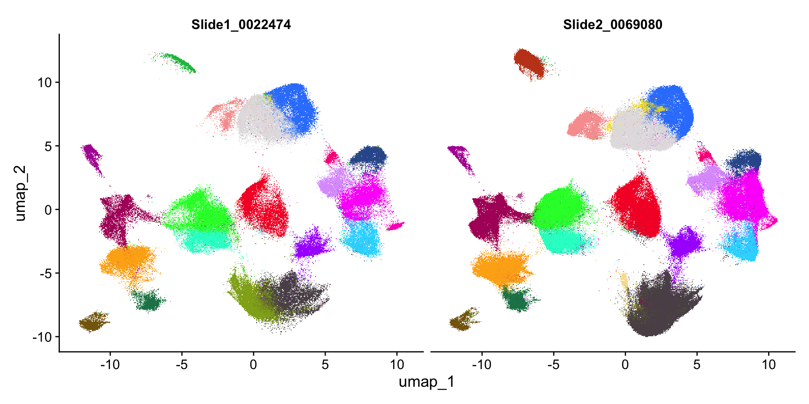
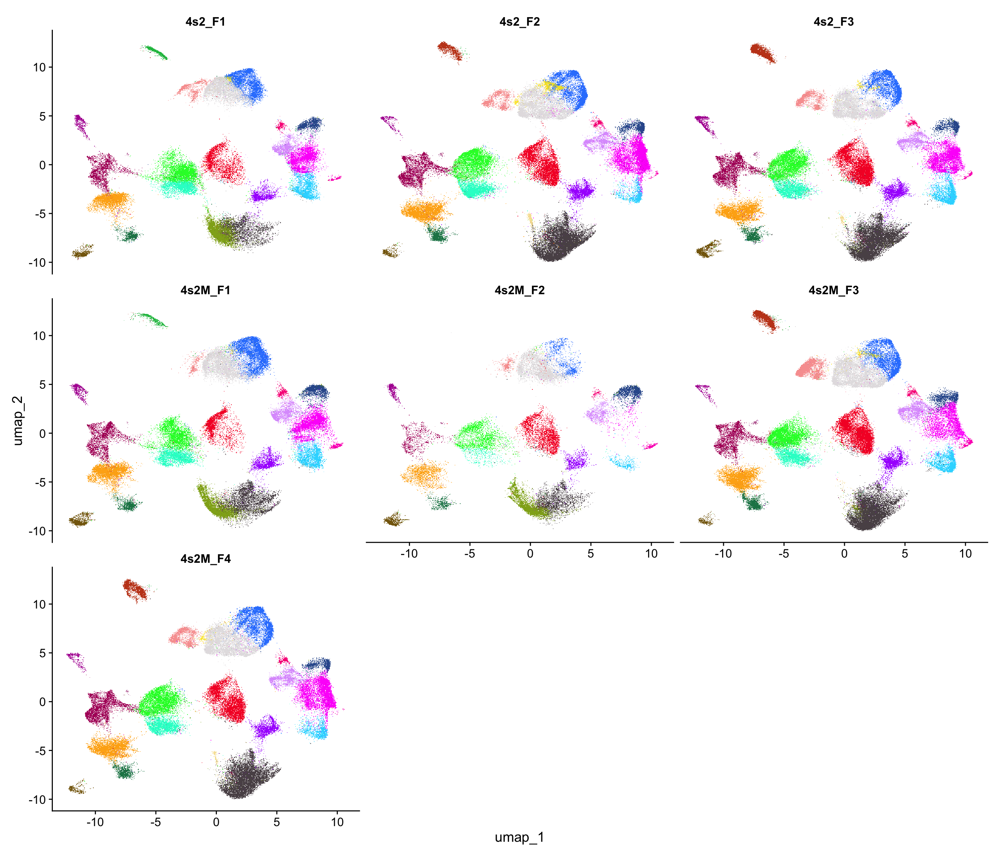

The two SCT notebooks already in this repo expose a slide effect on the merged Seurat object (see 20260512_QC.qmd). SCTransform(vars.to.regress = "slide") removes that effect as a single global mean shift. It cannot remove the spatial gradient of library size that runs across each tissue section, and that gradient is the artefact most likely to drive false spatially variable genes in Xenium data (Salim, Genome Biology, 2025).
SpaNorm models the gradient directly. We fit a negative-binomial GLM in which the gene- and location-specific library size is a 2D thin-plate spline of the cell centroids, regress that smooth component out, and write the log-scale adjusted counts back to Seurat as a new SpaNorm assay (Salim, Genome Biology, 2025). The model assumes spatial smoothness, so we fit one model per tissue section (seven fits across two slides) rather than one fit per slide.
The installed package version is SpaNorm 1.4.0 (Bioc 3.22), which only dispatches on SpatialExperiment; methods("SpaNorm") confirms a single SpaNorm,SpatialExperiment-method and no Seurat method. The development build on GitHub (bhuvad/SpaNorm, 1.5.x) adds a Seurat method that reads centroids from meta.data$x / $y, but we stay on the Bioconductor release. Therefore the build chunk wraps each per-sample subset in a SpatialExperiment before calling SpaNorm(), then writes the returned logcounts matrix back into a new Seurat assay.
Bibliography for this notebook:
Salim et al., “SpaNorm: spatially-aware normalization for spatial transcriptomics data,” Genome Biology, 2025. DOI: 10.1186/s13059-025-03565-y.
sample.p is the random fraction of cells used to fit the negative-binomial GLM parameters. The package default is 0.25. We use 0.05 here. Subsampling buys runtime and memory at near-no accuracy cost because the splines only need a representative scatter of cells across each tissue. Salim et al. (Genome Biology, 2025) recommend ~5 % on ~400k-cell Xenium datasets. The companion notebook 20260512_SpaNorm_samplep025.qmd re-runs the same pipeline at the package default of 0.25.
df.tps sets the degrees of freedom of the 2D thin-plate spline. The package default is 6. A length-2 vector decouples biology and library-size smoothness. We keep them coupled at 6 because the targeted 480-gene Xenium panel does not show the sharp gradients that justify an asymmetric spline.
adj.method selects how SpaNorm returns the residuals. "auto" lets the package pick among "logpac" (log percentile-invariant adjusted counts; the recommended default for Seurat workflows), "pearson", "medbio", and "meanbio" based on the fitted model. We use "auto".
backend toggles GPU vs CPU. "auto" falls back from GPU to CPU and is the safe choice on a laptop without CUDA.
Two further arguments stay at their defaults but are worth knowing: gene.model = "nb" (negative binomial; the only spatially-validated option in version 1.4.0) and lambda.a = 1e-4 (the L2 penalty on the spline coefficients, set conservatively to avoid overfitting the per-sample fits).
Setup
Code
# Seurat v5 holds the merged Xenium object with the per-slide FOV slots we read centroids from.library(Seurat)library(tidyverse)# qs2 reads the ~5 GB checkpoint roughly 10x faster than saveRDS.library(qs2)library(fs)# SpaNorm is the spatially aware normalization (Salim, Genome Biology, 2025).library(SpaNorm)# SpatialExperiment is the native input class for SpaNorm; we build one per sample.library(SpatialExperiment)# scCustomize only contributes its categorical palette helper for the UMAP plots.library(scCustomize)# Seed Louvain and any other stochastic step so cluster labels stay stable across renders.set.seed(1)# Reload the post-SpaNorm checkpoint so renders skip the ~40 min build chunk below.xen <-qs_read("data/20260512_microglia_switch_spanorm.qs2")
Build the SpaNorm assay (one fit per sample)
Code
# eval:false because this is the one-off build; every render reloads the checkpoint above.# Sample, slide, and condition lookup; matches R/20260512_xenium2seurat.R for self-containment.samples <-tribble(~sample_id, ~slide, ~condition,"4s2_F1", "Slide1_0022474", "control","4s2M_F1", "Slide1_0022474", "switched","4s2M_F2", "Slide1_0022474", "switched","4s2_F2", "Slide2_0069080", "control","4s2_F3", "Slide2_0069080", "control","4s2M_F3", "Slide2_0069080", "switched","4s2M_F4", "Slide2_0069080", "switched")# Load the raw merged object; SpaNorm needs raw counts, not the SCT residuals.xen <-qs_read("data/20260512_microglia_switch_original_seurat.qs2")DefaultAssay(xen) <-"Xenium"# Build the sample_id -> FOV-name lookup from the object itself; LoadXenium uses default name "fov" and merge renames collisions# (so the actual names are usually fov.1 / fov.2, not the slide labels).fov_to_slide <-map_chr(Images(xen), \(img) {# Each FOV's cells share the same slide value in meta.data; use the first one as the slide tag.unique(xen@meta.data[Cells(xen[[img]]), "slide"])[1]}) |>set_names(Images(xen))# Invert: slide -> FOV, then index by sample slide to get the per-sample FOV lookup.slide_to_fov <-set_names(names(fov_to_slide), unname(fov_to_slide))fov_lookup <-set_names(slide_to_fov[samples$slide], samples$sample_id)# Run SpaNorm on one sample. Returns the log-scale normalized matrix with the original cell barcodes as colnames.spanorm_one_sample <-function(s, xen, fov_lookup) {# Subset keeps only the cells of one tissue section; SpaNorm's smoothness assumption is per section. seu_s <-subset(xen, subset = sample_id == s)# Centroids come from the slide FOV; we filter to the cells that survived the per-sample subset. coords <-GetTissueCoordinates(seu_s, image = fov_lookup[[s]]) |>filter(cell %in%Cells(seu_s))# SpatialExperiment is SpaNorm's native input; we hand it raw counts plus the 2D centroids. spe <-SpatialExperiment(assays =list(counts =GetAssayData(seu_s, assay ="Xenium", layer ="counts")),spatialCoords =as.matrix(coords[, c("x", "y")]))# sample.p=0.05 follows (Salim, Genome Biology, 2025) for ~400k-cell datasets; auto picks adj.method and backend. spe <-SpaNorm(spe,sample.p =0.05,df.tps =6,adj.method ="auto",backend ="auto",verbose =FALSE)# logcounts holds the normalized matrix; we keep Seurat's cell barcodes for the later cbind. out <- SummarizedExperiment::assay(spe, "logcounts")colnames(out) <-Cells(seu_s) out}# Loop over the 7 samples; map keeps the per-sample matrices named for the reduce step.norm_list <-map(samples$sample_id, spanorm_one_sample,xen = xen, fov_lookup = fov_lookup) |>set_names(samples$sample_id)# Bind the per-sample matrices into one wide normalized matrix and reorder to the merged object's cell order.# Qualify reduce() because SpatialExperiment loads IRanges, whose reduce() masks purrr::reduce.norm_mat <- purrr::reduce(norm_list, cbind)norm_mat <- norm_mat[, Cells(xen)]# Attach as a new v5 assay; data layer only because the auto-selected adjustment returns log-scale residuals.# CreateAssay5Object avoids the "counts layer not present" warning that CreateAssayObject (v3) triggers inside a v5 object.xen[["SpaNorm"]] <-CreateAssay5Object(data = norm_mat)DefaultAssay(xen) <-"SpaNorm"# Use all 480 genes as variable features; on a targeted Xenium panel every gene was chosen as informative by design,# and FindVariableFeatures("vst") requires a counts layer the SpaNorm assay does not carry.VariableFeatures(xen) <-rownames(xen)# RunPCA expects a scale.data layer; SCT writes it implicitly, but our custom SpaNorm assay only carries the data layer.xen <-ScaleData(xen, verbose =FALSE)# Default npcs (50) is fine; we only use the first 30 downstream.xen <-RunPCA(xen, npcs =30, verbose =FALSE)# 1:30 PCs matches the SCT twins; FindNeighbors default k = 20.xen <-FindNeighbors(xen, reduction ="pca", dims =1:30, verbose =FALSE)# algorithm = 1 is plain Louvain; resolution 0.5 matches the SCT twins for a like-for-like comparison.xen <-FindClusters(xen, resolution =0.5, algorithm =1, verbose =FALSE)# UMAP only for visual QC of the clusters; not used by any downstream stat.xen <-RunUMAP(xen, reduction ="pca", dims =1:30, verbose =FALSE)# Checkpoint commented out: uncomment to refresh data/20260512_microglia_switch_spanorm.qs2 after parameter changes.# qs_save(xen, "data/20260512_microglia_switch_spanorm.qs2")
PCA split by slide
Code
# Palette sized to the actual cluster count so colors stay stable if resolution changes the number of clusters.colorines <-scCustomize_Palette(num_groups =n_distinct(xen$seurat_clusters), ggplot_default_colors =FALSE)
Code
# Split by slide to eyeball whether the slide effect documented in 20260512_QC.qmd survives spatial-aware normalization.PCAPlot(xen, split.by ="slide", cols = colorines)

Result. Slide1 and Slide2 occupy the same PC1 and PC2 envelope, and cluster colors map onto the same fan structure on both panels. We read this as removal of the slide-level mean shift that 20260512_QC.qmd flagged. Residual density differences in clusters 2 (red) and 14 (dark blue) are mild and most plausibly track tissue composition, not a global library-size shift.
UMAP
Code
DimPlot(xen, cols = colorines)

Result. At Louvain resolution 0.5 SpaNorm yields 25 discrete clusters with clean separation between lobes. The cluster count sits in the same range as the two SCT notebooks at the matched resolution. The topology shows several isolated islands (cluster 16 upper-left; clusters 17 and 21 lower-left) that we will inspect for marker specificity in the three-way comparison notebook.
Per slide
Code
# Side-by-side UMAPs per slide reveal any cluster that only exists in one slide; the failure mode we test against.DimPlot(xen, split.by ="slide", cols = colorines) +NoLegend()

Result. Two regions of the UMAP show a clear slide imbalance. The top-left island carries the green cluster on Slide1 and a dark-red cluster on Slide2, so the two slides populate the same UMAP territory with different cluster identities. The bottom-center lobe (cluster 0) is also visibly denser on Slide2 than on Slide1.
Per sample
Code
# Per-sample facets check whether 4s2M_F2 (partial section) lands in the same cluster geometry as the other six.DimPlot(xen, split.by ="sample_id", ncol =3, cols = colorines) +NoLegend()

Result. The six complete sections (4s2_F1, F2, F3 and 4s2M_F1, F3, F4) reproduce the full 25-cluster landscape with similar cluster proportions. 4s2M_F2 contributes fewer cells overall, as expected for a partial section, but the cells it does contribute land in the same basins as the matched complete sections. We retain 4s2M_F2 for now and re-evaluate at the cluster-composition step.
References
Salim A et al. “SpaNorm: spatially-aware normalization for spatial transcriptomics data.” Genome Biology, 2025. DOI: 10.1186/s13059-025-03565-y.